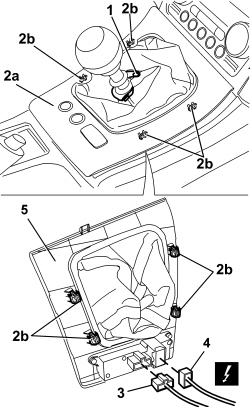
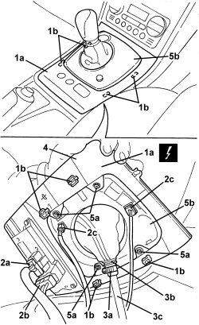
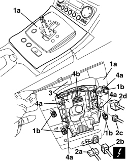

7040L37 GEAR LEVER TRIM - R.R
- Path
- Procedures > 70 FITTINGS > 7040 BODY INTERIOR FITTINGS AND TRIM > 7040L PASSENGER COMPARTMENT FLOOR COVERING > 7040L37 GEAR LEVER TRIM - R.R
- Kind
- repair procedure (removal / refitting; the operation number is the code)
- Applies to
- all engines; all production periods
- Interactive page
- https://sloeber94.github.io/elrnDB-aBrrSpdr/en/#/946002648
Applies to: all engines; all production periods
 Removing
Removing
 Refitting
Refitting1. Release the boot retaining button.
2. Lift up the trim (2a) slightly releasing the internal retainers (2b).
3. Detach the electrical connection.
Description | Connector | |
|---|---|---|
3 | HAZARD WARNING LIGHTS SWITCH |
4. Detach the electrical connection.
Description | Connector | |
|---|---|---|
4 | SWITCH UNIT ON TUNNEL |
5. Keep the trim.

Applies to: all engines; all production periods
- If necessary:
Applies to: all engines; all production periods
Refitting
Removing- Check that the panel is not damaged.
- If removed, position the switch unit.
Op. 7040A62 SWITCH UNIT ON TUNNEL R R
- Connect the electrical connections.
- Position the panel and attach the retainers.
- Fit the boot retaining button.
Applies to: engines: 2.2 JTS; all production periods; only with equipment: Smart gearbox
Removing
Refitting1. Lift up the trim (1a) slightly releasing the internal retainers (1b).
2. Disconnect electrical connections (2a, 2b, 2c).
Component | Connector | |
|---|---|---|
2a | HAZARD WARNING LIGHTS SWITCH | |
2b | SWITCH UNIT ON TUNNEL | |
2c | GEAR CONTROL UNIT |
3. Loosen the retaining band (3a) and remove the grip (3b) from the gear lever (3c).
4. Keep the trim complete with gear lever grip.
5. If necessary, undo the bolts (5a) and remove the trim and switches (5b) for the gear control.

Applies to: engines: 2.2 JTS; all production periods; only with equipment: Smart gearbox
- If necessary,
Applies to: engines: 2.2 JTS; all production periods; only with equipment: Smart gearbox
Refitting
Removing- Check that the gear lever surrounding panel is not damaged.
- If removed, refit the switch unit.
Op. 7040A62 SWITCH UNIT ON TUNNEL R R
- If removed, position the trim and switches for the gear control and tighten the bolts.
- Place the grip on the gear lever, then fasten it using the retaining band.
- Connect the electrical connections.
- Position the gear lever surrounding trim and attach the retainers.
Applies to: engines: 3.2 JTS; all production periods; only with equipment: C.A.E.
Removing
RefittingOp. 2135A16 AUTOMATIC TRANSMISSION LEVER HANDLE - R R
1. Lift up the trim (1a) slightly releasing the internal retainers (1b).
2. Disconnect the electrical connections (2a, 2b, 2c and 2d).
DESCRIPTION | CONNECTOR | |
|---|---|---|
2a | HAZARD WARNING LIGHTS SWITCH | |
2b | SWITCHES ON TUNNEL | |
2c,2d | AUTOMATIC TRANSMISSION GEAR SELECTOR CONTROL UNIT |
3. Keep the trim assembly.
4. If necessary, undo the bolts (4a) and remove the automatic gear lever position unit (4b).

Applies to: engines: 3.2 JTS; all production periods; only with equipment: C.A.E.
- If necessary,
Applies to: engines: 3.2 JTS; all production periods; only with equipment: C.A.E.
Refitting
Removing- Check that the gear lever surrounding panel is not damaged.
Op. 7040A62 SWITCH UNIT ON TUNNEL R R
- If removed, position the automatic gear lever position unit and tighten the bolts.
- Connect the electrical connections.
- Position the gear lever surrounding trim and attach the retainers.
Topics linked from this page (6)
- 2135A16 AUTOMATIC TRANSMISSION LEVER HANDLE - R R
- 7040A62 SWITCH UNIT ON TUNNEL R R
- H020 HAZARD WARNING LIGHTS SWITCH
- H035 TUNNEL SWITCHES
- H037 GEAR CONTROLS
- M053 AUTOMATIC TRANSMISSION GEAR SELECTOR CONTROL UNIT
Topics that link to this page (57)
- I010 DIRECTION INDICATORS / HAZARD WARNING LIGHTS NOT WORKING
- I039 DIRECTION INDICATORS NOT WORKING WHEN HAZARD WARNING LIGHT SWITCH IS PRESSED
- 2125C30 GEAR ENGAGEMENT/SELECTION CABLES - R.R
- 2125C32 GEAR CONTROL LEVER MOUNT - R R
- 2135A10 AUTOMATIC TRANSMISSION MANUAL CONTROL LEVER AND SUPPORT - R + R AND OVERHAUL
- 2135A12 GEAR ENGAGEMENT CABLE - R R
- 2135A17 AUTOMATIC GEARBOX LEVER POSITIONING PLATE - R.R.
- 2127A16 PANEL FOR CONTROL LEVER FOR MANUAL GEARBOX WITH HYDRAULIC SELECTION - R.R.
- 2127A20 COVER FOR CONTROL LEVER/HANDLE FOR MANUAL GEARBOX WITH HYDRAULIC SELECTION - R.R.
- 2127A70 SUPPORT FOR CONTROL LEVER FOR MANUAL GEARBOX WITH HYDRAULIC SELECTION AND HANDBRAKE - R.R.
- 2127E30 SOFTWARE FUNCTION SELECTION KEY (ONE) FOR ELECTROHYDRAULIC SELECTION GEARBOX - R.R.
- 3350E30 LATERAL ACCELERATION AND SLEWING SENSOR - R.R
- 3380A10 HANDBRAKE LEVER - R+R
- 3380A30 HANDBRAKE CABLE - R+R
- 5010B24 UNDER-FACIA AIR DUCTS - R.R.
- 5010B49 TUNNEL CONSOLE GLOVE COMPARTMENT AIR DUCT - R. R.
- 5010B86 CENTRE CONSOLE COOLING DUCT - R.R.
- 5040C10 AIR CONDITIONING CASING - R.R
- 5040C50 AIR CONDITIONING HEATER RADIATOR - R.R.
- 5040C64 A/C EVAPORATOR - R+R
- 5040D80 AIR CONDITIONING SYSTEM CABLE LOOM - R.R. OR REPLACE
- 5040D86 AIR CONDITIONING RIGHT AIR MIXTURE FLAP CONTROL MOTOR - R.R
- 5040D94 AIR CONDITIONING LEFT UPPER AIR DISTRIBUTION FLAP MOTOR (DEFROST) - R.R
- 5040D96 AIR CONDITIONING RIGHT UPPER DISTRIBUTION FLAP MOTOR (DEFROST) - R.R
- 5505A68 CABLE LOOM FOR CONSOLE UNDER DASHBOARD AND/OR TUNNEL COVER - R.R. OR REPLACE
- 5505C31 BUILT-IN WIRING UNDER DASHBOARD - R.R.
- 5550D18 HANDBRAKE ON WARNING LIGHT SWITCH - R+R
- 5580C22 AIR BAG MODULE - PASSENGER SIDE - R.R
- 5580C24 PASSENGER SIDE AIR BAG MODULE SUPPORT R. R.
- 5580E34 CAR ANTI-THEFT DEVICE ANTI-LIFT SENSOR - R.R. FOLLOWING ELECTRICAL CIRCUIT CHECK
- 5580H12 PARKING OBSTACLE DETECTION DEVICE BUZZER - R.R.
- 7030H10 HOOD CONTROL SWITCH - R.R.
- 7040A10 DASHBOARD TRIM - R+R
- 7040A62 SWITCH UNIT ON TUNNEL R R
- 7040A89 REINFORCEMENT BRACKET BETWEEN DASHBOARD SUPPORTING CROSSMEMER AND BODYSHELL - R.R.
- 7040L10 PASSENGER COMPARTMENT FLOOR COVERING - R.R.
- 7040L20 TUNNEL COVER - R.R
- 7040L23 TRIM ON TUNNEL COVER - R.R.
- 7040L73 BOTTLE-HOLDER/ASHTRAY IN REAR TUNNEL TRIM - R.R.
- 7040L74 TUNNEL TRIM MOUNTING BRACKET/SUPPORT - R.R.
- 7210A74 R R FACIA SUPPORT BEAM
- E1050 CAN CONNECTION LINES - WIRING DIAGRAM
- E1050 CAN CONNECTION LINES - COMPONENT LOCATION
- E2020 DIRECTION INDICATORS/HAZARD WARNING LIGHTS - WIRING DIAGRAM
- E2020 DIRECTION INDICATORS/HAZARD WARNING LIGHTS - COMPONENT LOCATION
- E2020 DIRECTION INDICATORS/HAZARD WARNING LIGHTS - WIRING DIAGRAM
- E2020 DIRECTION INDICATORS/HAZARD WARNING LIGHTS - COMPONENT LOCATION
- E2535 CONTROLS LIGHTING - WIRING DIAGRAM
- E2535 CONTROLS LIGHTING - COMPONENT LOCATION
- E3040 CENTRAL LOCKING - WIRING DIAGRAM
- E3040 CENTRAL LOCKING - COMPONENT LOCATION
- E7022 VDC - WIRING DIAGRAM
- E7022 VDC - COMPONENT LOCATION
- E7051 ROBOTIZED GEARBOX - WIRING DIAGRAM
- E7051 ROBOTIZED GEARBOX - COMPONENT LOCATION
- E7050 AUTOMATIC TRANSMISSION - WIRING DIAGRAM
- E7050 AUTOMATIC TRANSMISSION - COMPONENT LOCATION